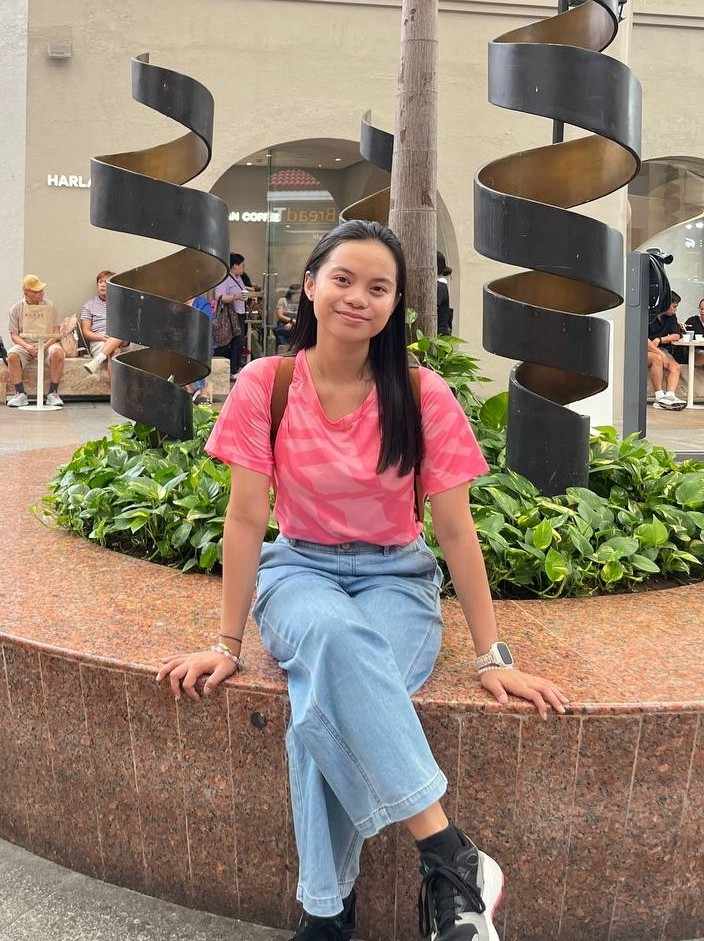
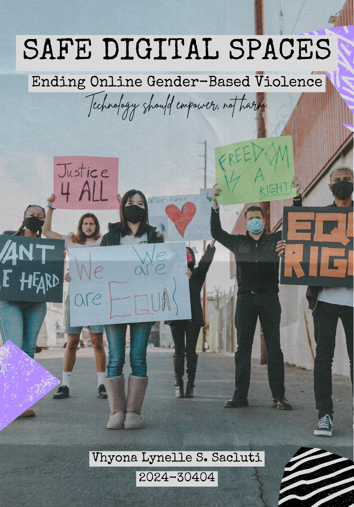
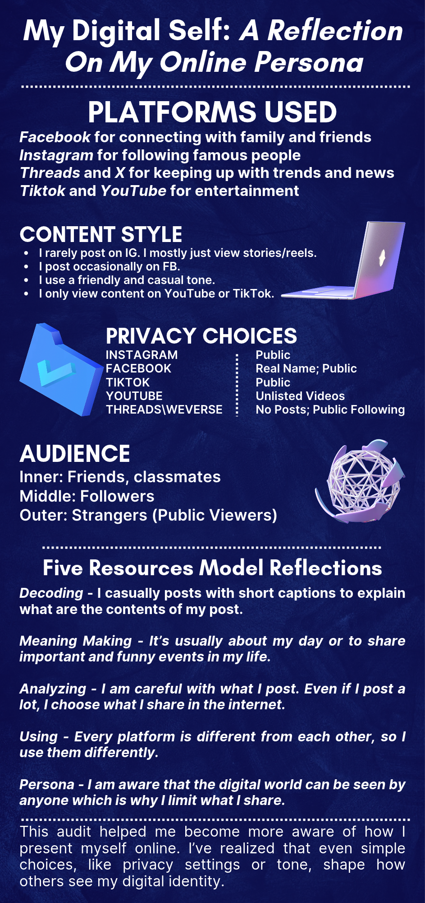
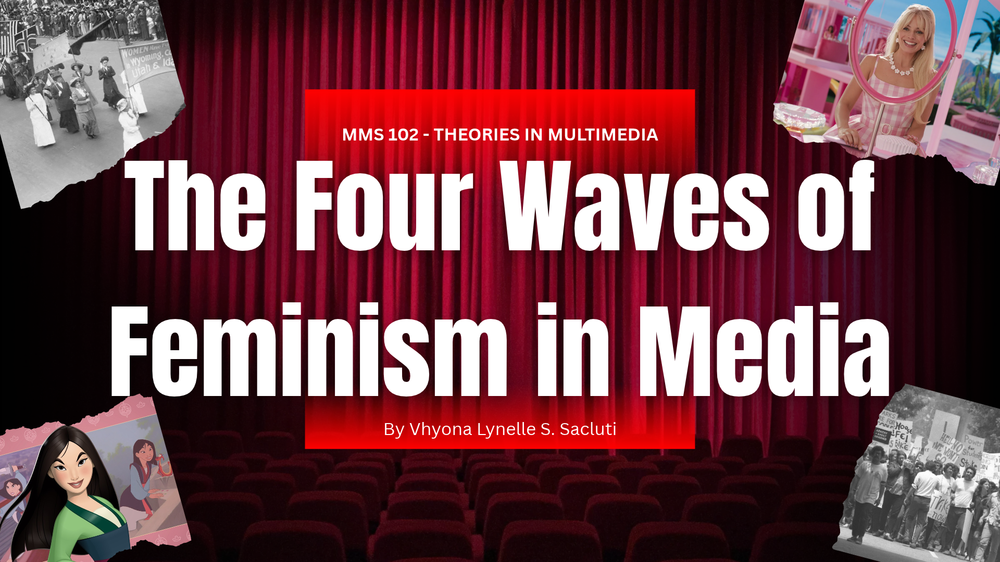

ABOUT ME
Hi! I'm a 3rd-year BA Multimedia Studies student and a part-time working student. I would describe myself as an ambivert. I'm comfortable spending time on my own, but I also enjoy connecting and having conversations with other people. I'm easy to approach and always open to meeting new people and learning from different experiences.
Balancing school and work has taught me to be responsible, organized, and adaptable. As a multimedia student, I enjoy exploring creative ways to express ideas and communicate through digital media.
THINGS I LOVE
- K-Dramas (K-dramas & Variety Shows)
- K-Pop (BTS, ATEEZ, SEVENTEEN, and 2NE1)
- Formula 1 (McLaren & Lando Norris)
- Dancing (Expressing myself through movement)
PASSION PROJECTS
Safe Digital Spaces: Zine Cover Page

My Digital Self: A Reflection On My Online Persona Infographic

The Four Waves of Feminism in Media
